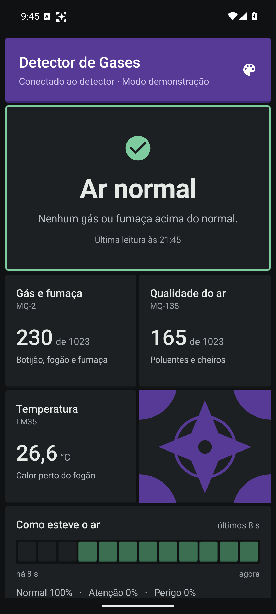
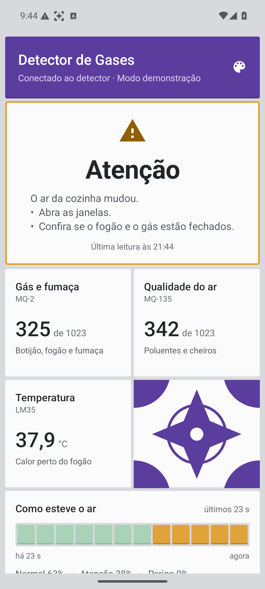
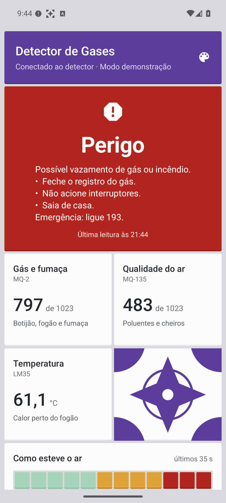

PROJETO INTEGRADOR III · ANDROID
Um olhar claro
sobre o ar da
casa.
O Detector de Gases transforma leituras do Arduino em estados que qualquer pessoa entende: normal, atenção e perigo.
Conexão Bluetooth · alertas · histórico da sessão



01estado
em um olhar
em um olhar